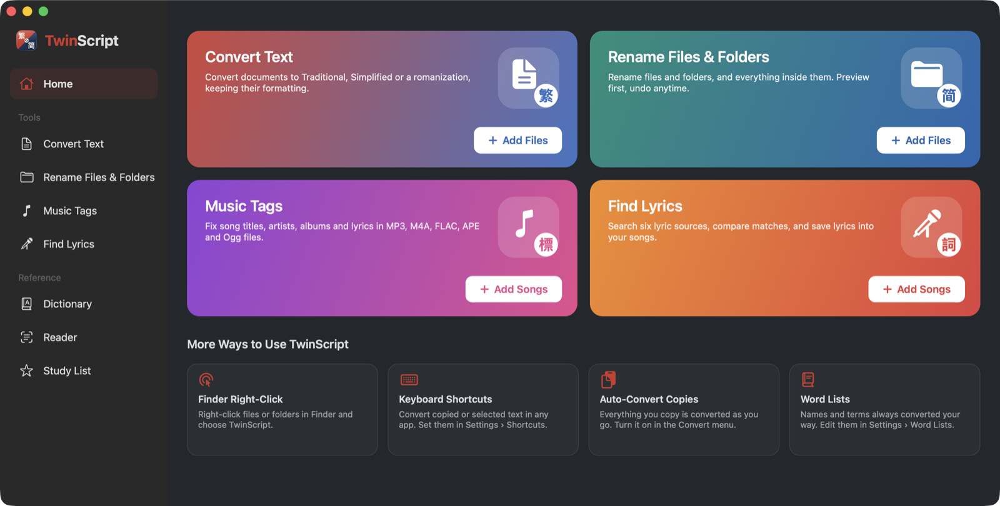
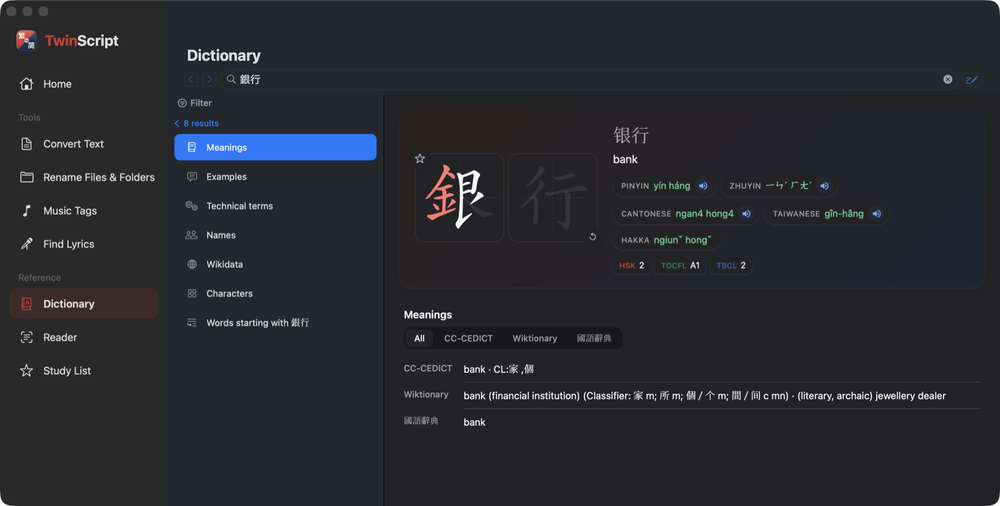
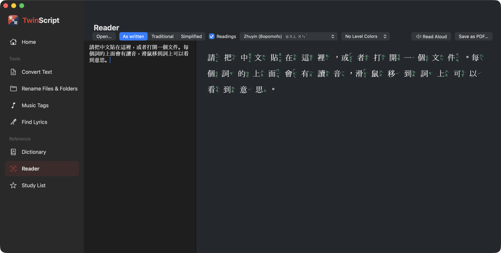
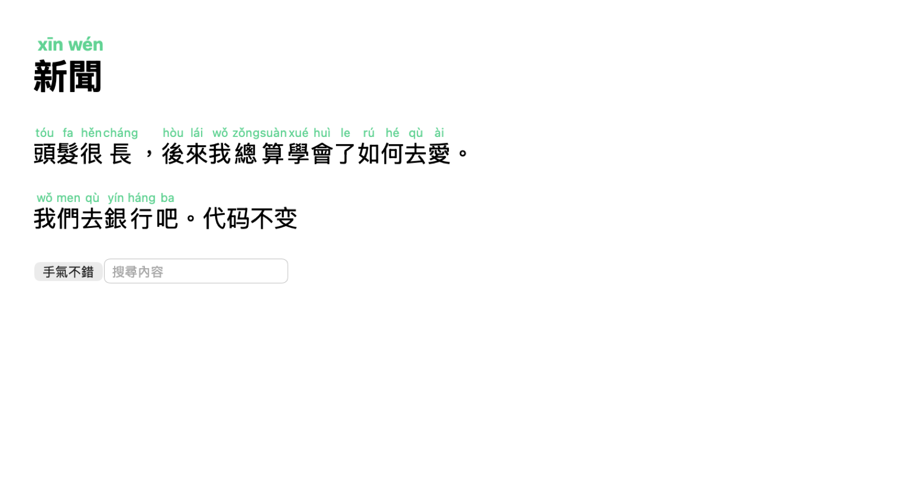
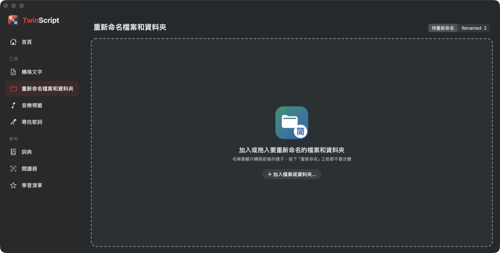

繁 ⇄ 简 ⇄ 拼
Traditional and Simplified Chinese, twelve romanizations and a full Chinese–English dictionary, for documents, file names, music, web pages and everything you copy.
Download for Mac
Words, not just characters: 头发 becomes 頭髮 and 发展 becomes 發展, in Taiwan or Hong Kong style.
Word, Excel, PowerPoint, OpenDocument, EPUB, RTF and PDF keep their formatting. Text in any old encoding is read automatically.
Preview every new name. ⌘Z undoes a rename, and renaming back from Pinyin gives the characters back.
MP3, M4A, FLAC, APE and Ogg tags and lyrics, your Apple Music library, and lyrics from six sources.
Text in images and scanned PDFs is read on your Mac and saved as converted text.
Pinyin, Zhuyin, Jyutping, Yale, Tâi-lô, POJ, Hakka and more, above, below or beside the characters.
Finder's right-click menu, keyboard shortcuts, automatic clipboard conversion and watch folders.
An offline dictionary with readings in Mandarin, Cantonese, Taiwanese and Hakka, a reader with the reading over every word, and flashcards.


Chrome and Safari extensions convert pages with readings, show meanings on hover, and send words to your Study List.

